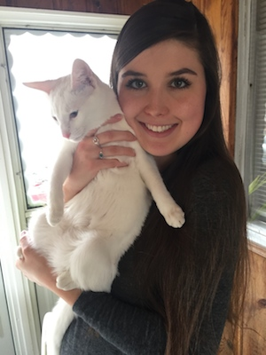

My name is Morgan Seibel. I'm from St. Louis, but right now I'm living in Columbia while I attend Mizzou. At Mizzou, I'm studying journalism with an emphasis in magazine design. I'm also a teaching assistant for a fundamentals of design class and a designer for the Columbia Missourian. I've loved learning about web development so far, and I can't wait to learn more in IS_LT 4370 as well as the multimedia planning and design class I'm taking through the J-school.
Here's an image of me (and my cat, Diana):
